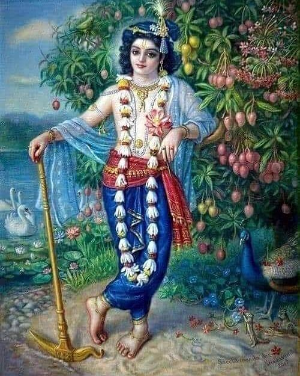

O Kesava! O Lord of the universe! O Lord Hari, who have assumed the form of a fish! All glories to You!
You easily acted as a boat in the form of a giant fish just to give protection to the Vedas, which had
become immersed in the turbulent sea of devastation.
(2)
kshitir iha vipulatare tishthati tava prishthe
dharani-dharana-kina-cakra-garishthe
kesava dhrita-kurma-sarira jaya jagadisa hare
O Kesava! O Lord of the universe! O Lord Hari, who have assumed the form of a tortoise! All glories to You! In this incarnation as a divine tortoise the great Mandara Mountain rests upon Your gigantic back as a pivot for churning the ocean of milk. From holding up the huge mountain a large scarlike depression is put in Your back, which has become most glorious.
(3)
vasati dasana-sikhare dharani tava lagna
sasini kalanka-kaleva nimagna
kesava dhrita-sukara-rupa jaya jagadisa hare
O Kesava! O Lord of the universe! O Lord Hari, who have assumed the form of a boar! All glories to You! The earth, which had become immersed in the Garbhodaka Ocean at the bottom of the universe, sits fixed upon the tip of Your tusk like a spot upon the moon.
(4)
tava kara-kamala-vare nakham adbhuta-sringam
dalita-hiranyakasipu-tanu-bhringam
kesava dhrita-narahari-rupa jaya jagadisa hare
O Kesava! O Lord of the universe! O Lord Hari, who have assumed the form of half-man, half-lion! All glories to You! Just as one can easily crush a wasp between one’s fingernails, so in the same way the body of the wasplike demon Hiranyakasipu has been ripped apart by the wonderful pointed nails on Your beautiful lotus hands.
(5)
chalayasi vikramane balim adbhuta-vamana
pada-nakha-nira-janita-jana-pavana
kesava dhrita-vamana-rupa jaya jagadisa har
O Kesava! O Lord of the universe! O Lord Hari, who have assumed the form of a dwarf-brahmana! All glories to You! O wonderful dwarf, by Your massive steps You deceive King Bali, and by the Ganges water that has emanated from the nails of Your lotus feet, You deliver all living beings within this world.
(6)
kshatriya-rudhira-maye jagad-apagata-papam
snapayasi payasi samita-bhava-tapam
kesava dhrita-bhrigupati-rupa jaya jagadisa hare
O Kesava! O Lord of the universe! O Lord Hari, who have assumed the form of Bhrigupati [Parasurama]! All glories to You! At Kurukshetra You bathe the earth in the rivers of blood from the bodies of the demoniac kshatriyas that You have slain. The sins of the world are washed away by You, and because of You people are relieved from the blazing fire of material existence.
(7)
vitarasi dikshu rane dik-pati-kamaniyam
dasa-mukha-mauli-balim ramaniyam
kesava dhrita-rama-sarira jaya jagadisa hare
O Kesava! O Lord of the universe! O Lord Hari, who have assumed the form of Ramacandra! All glories to You! In the battle of Lanka You destroy the ten-headed demon Ravana and distribute his heads as a delightful offering to the presiding deities of the ten directions, headed by Indra. This action was long desired by all of them, who were much harassed by this monster.
(8)
vahasi vapushi visade vasanam jaladabham
hala-hati-bhiti-milita-yamunabham
kesava dhrita-haladhara-rupa jaya jagadisa hare
O Kesava! O Lord of the universe! O Lord Hari, who have assumed the form of Balarama, the wielder of the plow! All glories to You! On Your brilliant white body You wear garments the color of a fresh blue rain cloud. These garments are colored like the beautiful dark hue of the River Yamuna, who feels great fear due to the striking of Your plowshare.
(9)
nindasi yajna-vidher ahaha sruti-jatam
sadaya-hridaya darsita-pasu-ghatam
kesava dhrita-buddha-sarira jaya jagadisa hare
O Kesava! O Lord of the universe! O Lord Hari, who have assumed the form of Buddha! All glories to You! O Buddha of compassionate heart, you decry the slaughtering of poor animals performed according to the rules of Vedic sacrifice.
(10)
mleccha-nivaha-nidhane kalayasi karavalam
dhumaketum iva kim api karalam
kesava dhrita-kalki-sarira jaya jagadisa hare
O Kesava! O Lord of the universe! O Lord Hari, who have assumed the form of Kalki! All glories to You! You appear like a comet and carry a terrifying sword for bringing about the annihilation of the wicked barbarian men at the end of the Kali-yuga.
(11)
sri-jayedeva-kaver idam uditam udaram
srinu sukha-dam subha-dam bhava-saram
kesava dhrita-dasa-vidha-rupa jaya jagadisa hare
O Kesava! O Lord of the universe! O Lord Hari, who have assumed these ten different forms of incarnation! All glories to You! O readers, please hear this hymn of the poet Jayadeva, which is most excellent, an awarder of happiness, a bestower of auspiciousness, and is the best thing in this dark world.
(12)
vedan uddharate jaganti vahate bhu-golam udbibhrate
daityam darayate balim chalayate kshatra-kshayam kurvate
paulastyam jayate halam kalayate karunyam atanvate
mlecchan murchayate dasakriti-krite krishnaya tubhyam namah
O Lord Krishna, I offer my obeisances unto You, who appear in the forms of these ten incarnations. In the form of Matsya You rescue the Vedas, and as Kurma You bear the Mandara Mountain on Your back. As Varaha You lift the earth with Your tusk, and in the form of Narasimha You tear open the chest of the daitya Hiranyakasipu. In the form of Vamana You trick the daitya king Bali by asking him for only three steps of land, and then You take away the whole universe from him by expanding Your steps. As Parasurama You slay all of the wicked kshatriyas, and as Ramacandra You conquer the rakshasa king Ravana. In the form of Balarama You carry a plow with which You subdue the wicked and draw toward You the River Yamuna. As Lord Buddha You show compassion toward all the living beings suffering in this world, and at the end of the Kali-yuga You appear as Kalki to bewilder the mlecchas [degraded low-class men].
Special Thanks to